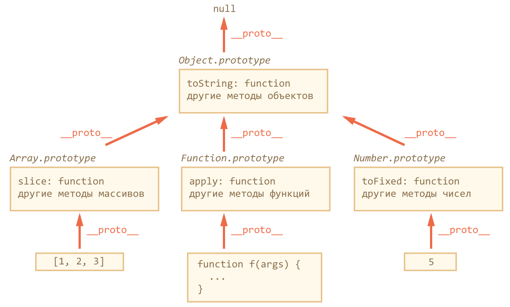

Теория
-
ХРАНЕНИЕ И КОПИРОВАНИЕ
- Примитивные типы данных - хранение и копирование
«по значению» . В результате копирования получатся две полностью независимые переменные - Объекты - хранение и копирование
«по ссылке» . В переменной, которой присвоен объект, хранится не сам объект, а «адрес его места в памяти», иными словами – «ссылка» на него. При копировании переменной с объектом – копируется эта ссылка, а объект по-прежнему остается в единственном экземпляре. Получили две переменные, в которых находятся ссылки на один и тот же объект
Методы
Методы
var a = parent instanceof ClassParent; // проверка, какому классу принадлежит объект, с учетом прототипного наследования
var obj = Object.assign ({name:'Tony'}, {age:25}, {test:'test'}); // используется для копирования значений всех собственных перечисляемых свойств из одного или более исходных объектов в целевой объект. После копирования он возвращает целевой объект
Методы для работы с __proto__
Object.create (proto, descriptors); // добавление прототипа при создании объекта (создаёт пустой объект с __proto__, равным первому аргументу, второй содержит дескрипторы свойств)
Object.setPrototypeOf (obj, proto); // добавление прототипа после создания объекта (устанавливает obj.__proto__ = proto)
Object.getPrototypeOf (obj); // возвращает obj.__proto__
ObjChild.isPrototypeOf (ObjParent); // является ли объект ObjParent прототипом для объекта ObjChild
Перечисление всех свойств объекта
for(let key in obj) { obj[key] } // перебирает все перечисляемые свойства объекта и его цепочку прототипов
var a = Object.keys (obj); // возвращает массив со всеми собственными (те, что в цепочке прототипов, не войдут в массив) именами перечисляемых свойств объекта
var a = Object.keys (obj).length ; // количество свойств
var a = Object.getOwnPropertyNames (obj); // возвращает массив содержащий все имена своих свойств (перечисляемых и неперечисляемых) объекта
Проверка наличия свойства
- Можно обратиться к любому свойству объекта, даже если его нет. Если свойство не существует, вернется undefined
var a = obj.name; // проверка наличия свойсва 'name' в объекте (не различает отсутствующие свойства и те что были установлен в undefined)
var a = 'name' in obj; // проверка наличия свойсва 'name' в объекте (различает отсутствующие свойства и те что были установлен в undefined)
var a = obj.hasOwnProperty ('name'); // проверка наличия свойства 'name' в объекте (не берет наследованные свойства)
Прототипное наследование
ClassChild.prototype .parentFunc = function() {} // запись метода в прототип
ClassChild.prototype .parentProp = function() {} // запись свойства в прототип
ClassChild.prototype = Object.create (ClassParent.prototype); // наследования методов и свойств из ClassParent.prototype
Дескрипторы свойств
Object.getOwnPropertyDescriptor (obj, 'name'); // получение дескриптора свойств
Object.defineProperty (obj, prop, descriptor); // переопределение дескриптора свойств
Object.defineProperties (obj, descriptors); // позволяет объявить сразу несколько свойств
Объекты
Литеральная нотация
Литеральная нотация
var property = 'lastName';
var person = {
firstName: 'Brad',
[property]: 'Stark',
age: 25,
children: ['Liza', 'Petro'],
address: {
street: '555 Some st',
city: 'Boston',
state: 'MA'
},
getName() {
return this.firstName;
},
get fullName() {
return this.firstName + ' ' + this.lastName;
},
set fullName(value) {
this.firstName = value;
}
}
Обращение к свойствам и методам
var a = person.firstName; // точечная нотация (Dot notation)
var a = person['firstName']; // скобочная нотация (Bracket notation)
var a = person.children[0]; // обращение к свойству (массив)
var a = person.address.street; // обращение к свойству (объект)
var a = person.getName(); // обращение к методу
Обновление и удаление свойства
person.firstName = 'Tony'; // обновление свойства
person.height = 190; // задание нового свойства
delete person.firstName; // удаление свойства (можно удалить только ненаследованные свойства объекта, наследованные свойства удаляются у прототипа)
Добавление метода
person.greet = function() {
console.log('hi');
}
Геттеры и сеттеры
person.fullName = 'Steve'; // сеттер
var a = person.fullName; // геттер (result = Steve Stark)
Перебор объекта
- Порядок перебора соответствует порядку объявления для нечисловых ключей, а числовые или числовые строки сортируются
for(let key in obj) {
console.log(key); // ключи
console.log(obj[key]); // значения
}
Конструктор создания объекта
var apple = new Object();
apple.color = 'green';
apple.shape = 'round';
apple.describe = function() {
return 'An apple is ' + this.color;
}
var a = apple.color;
var a = apple.describe();
Создание прототипа
-
ПРОТОТИП
- У каждого объекта есть прототип, от которого он наследует свойства и методы. Если объект не включает в себя запрошенное свойство, JavaScript выполнит поиск этого свойства в прототипе объекта. При этом поиск будет выполняться по цепочке прототипов до тех пор, пока не будет найдено то, что нужно. Если же поиск успехом не увенчается, будет возвращена ошибка
// объект
var Human = {
type: "Human",
head: 1,
legs: 2
};
// прототип
var Megahuman = Object.create (Human);
Megahuman.type; // Human
Megahuman.head; // 1
Megahuman.head = 2; // 2
Human.head; // 1
Megahuman.hands = 10; // 10
Human.hands; // undefined
Human.face; // undefined
Megahuman.face; // undefined
Human.face = "okay"; // okay
Megahuman.face; // okay
Megahuman.face = "awesome"; // awesome
Human.face; // okay
Human.isPrototypeOf (Megahuman); // является ли объект Human прототипом для объекта Megahuman
Удаление свойств
// объект
var Human = {
type: "Human",
head: 1,
legs: 2
};
// прототип
var Megahuman = Object.create(Human);
Megahuman.head = 2; // 2
delete Megahuman.head;
Megahuman.head; // 1
Конструктор прототипа
var Person = {
constructor(name, age) {
this.name = name;
this.age = age;
return this;
},
greet() {
console.log('Hi ' + this.name);
}
}
var person = Object.create(Person).constructor("Jack", 25);
var a = person.name;
person.greet();
Изменение конструктора
var WebDeveloper = Object.create(Person);
WebDeveloper.constructor = function(name, age, skills) {
Person.constructor.apply(this, arguments);
this.skills = skills || [];
return this;
}
WebDeveloper.develop = function() {
console.log('In Work');
}
var developer = Object.create(WebDeveloper).constructor('Jack', 25, ['html', 'css', 'js']);
console.log(developer.skills);
developer.develop();
console.log(developer.name);
Дескрипторы свойств
Свойства объекта имеют: имя, значение (атрибут value), атрибуты (writable, enumerable, configurable)
Object.getOwnPropertyDescriptor (obj, 'name'); // получение дескриптора свойств
Object.defineProperty (obj, prop, descriptor); // переопределение дескриптора свойств
Object.defineProperties (obj, descriptors); // позволяет объявить сразу несколько свойств
Получение дескриптора свойств
var person = {
name: 'Tony',
age: 20
}
var a = Object.getOwnPropertyDescriptor (person, 'name');
// {value: "Tony", writable: true, enumerable: true, configurable: true }
Переопределение дескриптора свойств
Object.defineProperty (obj, prop, descriptor)
obj // объект, в котором объявляется свойство
prop // имя свойства, которое нужно объявить или модифицировать
descriptor // дескриптор - объект, который описывает поведение свойства
// 1-объект, 2-свойство, 3-дескриптор
Object.defineProperty (person, 'name', {
value : 'Jack', // значение свойства (по умолчанию undefined)
writable : false, // значение свойства можно менять (по умолчанию false)
configurable : false, // возможность удаление свойства и изменения атрибутов свойства при помощи новых вызовов defineProperty (по умолчанию false)
enumerable : false, // свойство просматривается в цикле for..in и методе Object.keys() (по умолчанию false)
get() {} // функция, которая возвращает значение свойства (по умолчанию undefined)
set() {} // функция, которая записывает значение свойства (по умолчанию undefined)
});
Объект с парами свойсво:дескриптор
// 1-объект, 2-объект с парами свойсво:дескриптор
Object.defineProperties (person, {
name: {
value: 'Jack',
writable: false
},
age: {
value: 25,
writable: false
}
});
Обычное свойство
// оба вызова добавляют в объект user обычное (удаляемое, изменяемое, перечисляемое) свойство
var user = {};
user.name = 'Tony';
Object.defineProperty(user, 'name', { value:'Tony', configurable:true, writable:true, enumerable:true });
Геттеры и сеттеры
var user = {
firstName: "Вася",
surname: "Петров"
}
Object.defineProperty(user, "fullName", {
get() {
return this.firstName + ' ' + this.surname;
},
set(value) {
var split = value.split(' ');
this.firstName = split[0];
this.surname = split[1];
}
});
user.fullName = "Петя Иванов";
alert(user.fullName); // Вася Петров
alert(user.firstName ); // Петя
alert(user.surname ); // Иванов
Расширяемость объектов
Расширяемость объектов - возможность добавления новых свойств
var person = {
name: 'Tony',
age: 20
}
Object.preventExtensions (person); // запрещает добавление свойств в объект (применяется только к самому объекту)
var a = Object.isExtensible (person); // проверяет применение preventExtensions
Object.seal (person); // аналогичен preventExtensions, дополнительно задает атрибут configurable:false для всех свойств
var a = Object.isSealed (person); // проверяет применение seal
Object.freeze (person); // аналогичен seal, дополнительно делает все свойства доступные только для чтения (configurable:false, writable:false)
var a = Object.isFrozen (person); // проверяет применение freeze
Примеры
Задание свойств объекта
const text = 'Some text';
function getId() {
return 7;
}
let obj = {
text,
['prop_' + getId()]: 'some prop'
}
console.log(obj); // Object {text: 'Some text', prop_7: 'Some prop'}
Метод для разных объектов
var speak = function() {
console.log(this.sound, this.name);
}
var animal = {
sound: 'Mrr',
name: 'Cat',
speak: speak
}
animal.speak(); // Mrr, Cat
Функция, возвращающая объект
function createCar(property, value) {
return {
[property]: value,
['_' + property]: value,
[property.toUpperCase()]: value,
['get' + property]() {
return this[property];
}
};
}
var a = createCar('vin', 1);
Преобразование объектов: toString и valueOf
- В
логическом контексте объект - всегда true - При
строковом преобразовании объекта используется его метод toString. Он должен возвращать примитивное значение, причём не обязательно именно строку - Для
численного преобразования используется метод valueOf, который также может возвратить любое примитивное значение. У большинства объектов valueOf не работает (возвращает сам объект и потому игнорируется), при этом для численного преобразования используется toString
Логическое преобразование
// любой объект в логическом контексте – true, даже если это пустой массив [] или объект {}.
if ({} && []) {
alert( "Все объекты - true!" ); // alert сработает
}
Строковое преобразование
var user = {
name: 'Tony'
};
alert( user ); // [object Object]
// eсли в объекте присутствует метод toString, который возвращает примитив, то он используется для преобразования
var obj = {
name: 'Tony',
toString () {
return this.name;
}
};
alert( obj ); // Tony
Численное преобразование
// для численного преобразования объекта используется метод valueOf, а если его нет – то toString
var room = {
number: 777,
valueOf () { return this.number; },
toString () { return this.number; }
};
alert( +room ); // 777, вызвался valueOf
delete room.valueOf; // valueOf удалён
alert( +room ); // 777, вызвался toString
Классы
Теория
-
Основное
Класс - функция/шаблон, предназначенный для создания объектов и методовОбъект - это экземпляр, представитель класса, т.е. объект, созданный по шаблону со свойствами и методами, указанными в классеКонструктор - метод, который вызывается в момент создания объекта т.е. когда используется ключевое слово new он создает свойства и инициализирует, т.е. подготавливает объект к использованию. В классе может быть только 1 конструктор. Если не указать конструктор, то JS создаст пустой конструктор. Свойства указываются только в конструктореПринципы - класс должен отвечать за что-то одно (SOLID. Single Responsibility)
Статические свойства и методы
Статические свойства и методы принадлежат самому классу, а не объектам, созданным на его основеСтатические свойства - используются для хранения вспомогательной информацииСтатические методы - используются для создания вспомогательных функций. task.getDefaultColor(); нельзя вызывать напрямую
Геттеры и Сеттеры
Геттеры и Сеттеры - аксессоры. Внутри класса выглядят и ведут себя как методы, а снаружи выглядят и ведут себя как свойства. Эти свойства-методы позволяют получить доступ и присвоить значения "настоящим" свойствам объекта, т.е. выступают в роли фильтра. Названия свойств get и set не должны совпадать с названиями основных свойств объекта
Создание класса
// создание класса
class Task {
constructor(name = '', color = Task.getDefaultColor()) {
this.title = 'Выучить JS';
this.name = name;
this.color = color;
this._done = false;
Task.count += 1;
console.log('Создание задачи');
}
// свойство get связывает свойство объекта с функцией, которая будет вызываться
// при обращении к этому свойству
get done() {
return this._done === true ? 'Выполнена' : 'Не выполнена';
}
set done(value) {
if(value != undefined && typeof value === 'boolean') {
this._done = value;
} else {
console.error('Ошибка! Укажите значение true или false');
}
}
complete() {
this.done = true;
console.log(`Задача ${this.title} выполнена`);
}
// статический метод, позволяющий получить значение цвета по умолчанию,
// если цвет не был передан
static getDefaultColor() {
return 'Orange';
}
}
let task = new Task('Новая задача'); // создание экземпляра класса (объекта)
Task.count = 0; // задание статического свойства
console.log(task instanceof Task); // является ли объект представителем класса
console.log(task.title); // обращение к свойству title
console.log(task.name); // обращение к свойству name
console.log(task.color); // обращение к свойству color, не передавая color
console.log(Task.count); // обращение к статическому свойству count
task.complete(); // обращение к методу complete
console.log(task.done, task._done);
// переопределение стандартных методов
Task.prototype.toString = function() {
return this.name;
}
Наследование
class Task {
constructor(title, comment) {
this._comment = comment;
this.title = title;
this.done = false;
Task.count += 1;
console.log('create task');
}
get comment() {
return this._comment;
}
set comment(value) {
this._comment = value;
}
static getDefaultComment() {
return 'Задача';
}
complete() {
this.done = true;
console.log(`Задача ${this.title} выполнена`);
}
}
Task.count = 0; // общее кол-во задач
// наследование между двумя классами
// если у подкласса нет конструктора, он будет использовать конструктор родителя
// если подклассу указать конструктор, то он должен вызывать в начале
// конструктор родительского класса super()
// метод super() позволяет наследовать свойства и методы из прототипа
class SubTask extends Task {
constructor(title, comment, parent) {
super(title, comment);
this.parent = parent;
console.log('create subtask');
}
// переопределение родительского метода
complete() {
// this.done = true;
super.complete();
console.log(`Подзадача ${this.title} выполнена`);
}
}
let task = new Task('Изучить JavaScript', 'Comment Task');
let subtask = new SubTask('Изучить ES6', 'Comment SubTask', task);
task.complete();
subtask.complete();
console.log(SubTask.getDefaultComment());
console.log(SubTask.count);
В ES6 нельзя указывать класс до его объявления
Классы не засоряют глобальное пространство имен (объект window)
Выражения классов
Классы являются функциями, поэтому класс можно объявить двумя способами1. Class Declaration
class Task {
constructor() {
//
}
}
var Task = class Task {
constructor() {
console.log('Create a task');
}
}
var SubTask = class extends Task {
constructor() {
super();
console.log('Create a subtask');
}
}
var task = new Task();
var subtask = new SubTask();
ES5 (функциональный стиль)
Теория
-
Функция, запущенная через new, делает следующее:
- 1. Создаётся новый пустой объект
- 2. Ключевое слово this получает ссылку на этот объект
- 3. Функция выполняется. Как правило, она модифицирует this (т.е. этот новый объект), добавляет методы, свойства
- 4. Возвращается this Свойства
Приватные (private) - let prop локальные переменные/методы, включая параметры конструктора. доступн только внутри классаПубличные (public) - this.prop свойства/методы, записанные в this классаЗащищённые (protected) - this._prop начинаются с подчеркивания. доступны внутри класса и для его потомков
Функциональный подход
function User(name) {
this.name = name;
this.avatar = 'Photo';
this.deleteAvatar = function() {
this.avatar = null;
}
}
var user = new User('Jack'); // => User {name: "Jack", avatar: "Photo", deleteAvatar: ƒ}
user.deleteAvatar();
console.log(user); // => User {name: "Jack", avatar: null, deleteAvatar: ƒ}
Приватный метод
Простой приватный метод и свойство
function User() {
var privateProperty = 77;
this.publicMethod = function() {
privateMethod ();
}
var privateMethod = function() {
console.log('private method call' + privateProperty);
}
}
var user = new User();
user.publicMethod(); // => 'private method call77
Сохранение this в замыкании
function User() {
this.name = 'Tony';
var self = this;
this.publicMethod = function() {
privateMethod();
}
var privateMethod = function() {
console.log(self.name );
}
}
var user = new User();
user.publicMethod(); // => 'Tony'
Стрелочная функция
function User() {
this.name = 'Tony';
this.publicMethod = function() {
privateMethod();
}
var privateMethod = () => {
console.log(this.name);
}
}
var user = new User();
user.publicMethod();
Геттеры и сеттеры
function User() {
var count = 0;
this.counter = function(i) {
// вызов без параметра, значит режим геттера, возвращаем свойство
if (!arguments.length) return count;
count = i;
}
}
var user = new User();
user.counter(77);
user.counter(); // => 77
Наследование
Без аргументов
// Admin вызывает функцию User, передавая ей в качестве контекста this текущий объект
// User, в процессе выполнения, записывает в this свойства и методы, в данном случае this.name
function User() {
this.name = 'Tony';
}
function Admin() {
User.call(this);
this.id = 77;
}
var admin = new Admin(); // => Admin {name: "Tony", id: 77}
Передача аргументов
function User(id, name) {
this.id = id;
this.name = name;
}
function Admin() {
User.apply(this, arguments);
}
var admin = new Admin(77, 'Tony'); // => Admin {id: 77, name: "Tony"}
Переопределение наследованных методов
function User() {
this.name = 'Tony';
this.getName = function() {
console.log(this.name);
}
}
function Admin() {
User.call(this);
var parentFunc = this.getName;
this.getName = function() {
parentFunc.call(this); // то что было в this.getName
console.log('Jack'); // добавлено в метод getName
}
}
var admin = new Admin();
admin.getName(); // => 'Tony', 'Jack'
Правила обработки return
- При вызове return с объектом, будет возвращён он, а не this
- При вызове return с примитивным значением, оно будет отброшено и возвращен this
function BigAnimal() {
this.name = "Мышь";
return { name: "Годзилла" }; // <-- возвратим объект
}
alert( new BigAnimal().name ); // Годзилла, получили объект вместо this
function BigAnimal() {
this.name = "Мышь";
return "Годзилла"; // <-- возвратим примитив
}
alert( new BigAnimal().name ); // Мышь, получили this (а Годзилла пропала)
ES5 (прототипный стиль)
Основное
-
Основное
Класс - функция-конструктор вместе с её prototype. Такой способ объявления классов называют «прототипным стилем». При наследовании часть методов переопределяется, например, у массива Array есть свой toString- Функциональный стиль записывает в каждый объект и свойства и методы, а прототипный – только свойства
- При создании методов через прототип, мы теряем возможность использовать локальные переменные как приватные свойства, у них больше нет общей области видимости с конструктором Прототип __proto__ [[Prototype]]
- Если один объект имеет специальную ссылку __proto__ на другой объект, то при чтении свойства из него, если свойство отсутствует в самом объекте, оно ищется в объекте __proto__
- Объект, на который указывает ссылка __proto__, называется «прототипом»
- __proto__ - наследование на уровне объектов
function User() {
this.name = 'Tony';
}
User.prototype.myFunc = function() {}
Object.prototype.myFuncObject = function() {}
let obj = new User();
Свойство constructor
Свойство constructor по умолчанию
// у каждой функции по умолчанию есть свойство prototype, содержащее объект
function MyFunc() {}
MyFunc.prototype = {
constructor : MyFunc
};
var a = new MyFunc(); // => MyFunc {} __proto__: constructor: ƒ MyFunc()
Перезапись свойства constructor
function MyFunc() {}
MyFunc.prototype = {
jumps: true
};
var a = new MyFunc(); // => MyFunc {} __proto__: jumps: true
Создание объекта с тем же конструктором, что и данный
function User(name) {
this.name = name;
console.log(name);
}
var user1 = new User('Tony');
var user2 = new user1.constructor ('Jack');
Свойство prototype
-
Свойство prototype
- При создании объекта через new, в его прототип __proto__ записывается ссылка из prototype функции-конструктора
- Имеет смысл только у конструктора, когда есть вызов new
- Назначение: указывать __proto__ для новых объектов
- Значением prototype может быть только объект
- У каждой функции по умолчанию есть свойство prototype
function User() {
this.name = 'Tony';
}
function Admin() {
this.id = 77;
}
Admin.prototype = new User();
// Admin.__proto__ = new User();
var admin = new Admin(); // => Admin {id: 77, __proto__: User name: "Tony"}
Добавление методов
Добавление метода в прототип класса
function User(name) {
this.name = name;
this.avatar = 'Photo';
}
User.prototype.deleteAvatar = function() {
this.avatar = null;
}
var user = new User('Jack'); // => User {name: "Jack", avatar: "Photo", __proto__: deleteAvatar: ƒ () }
user.deleteAvatar();
console.log(user); // => User {name: "Jack", avatar: null, __proto__: deleteAvatar: ƒ ()}
Изменение встроенных прототипов
Object.prototype.myFunc = function() {
alert('myFunc');
}
let obj = {}
obj.myFunc(); // => 'myFunc'
Наследование классов
Пример наследования
1. Задание классов и прототипов
function User() {
this.userName = 'userName';
}
User.prototype.userFunc = function() {
alert('userFunc');
}
User.prototype.userProp = 'userProp';
function Admin() {
this.adminName = 'adminName';
}
2. Наследование. В прототип Admin добавлили всё из прототипа User
Admin.prototype = Object.create(User.prototype);
var admin = new Admin();
2. Наследование. Без добавления в прототип Admin (результат аналогичен)
var admin = Object.setPrototypeOf(new Admin(), User.prototype);
3. Добавление методов к Admin.prototype (при необходимости)
// добавлять после Admin.prototype = Object.create(User.prototype) чтобы не перетерло
Admin.prototype.adminFunc = function() {
alert('adminFunc');
}
4. Переопределение метода родителя (при необходимости)
Admin.prototype.userFunc = function() {
alert('not userFunc');
}
5. Вызов метода родителя внутри своего (при необходимости)
Admin.prototype.adminUserFunc = function() {
// вызвать метод родителя передав ему текущие аргументы
// если вызвать просто Animal.prototype.run(), то в качестве this функция run получит Animal.prototype, а это неверно, нужен текущий объект
User.prototype.userFunc.apply(this, arguments);
}
6. Обращение к методам и свойствам
admin.userFunc(); // => alert('userFunc')
admin.userProp; // => 'userProp'
Вызов конструктора родителя
function Animal(name) {
this.name = name;
this.speed = 0;
}
function Rabbit(name) {
Animal.apply(this, arguments);
}
Проверка класса: "instanceof"
instanceof позволяет проверить, какому классу принадлежит объект, с учетом прототипного наследования- Оператор obj instanceof Func проверяет что obj является результатом вызова new Func. Он учитывает цепочку __proto__, поэтому наследование поддерживается
- Оператор instanceof не сможет проверить тип значения, если объект создан в одном окне/фрейме, а проверяется в другом, т.к. в каждом окне своя иерархия объектов. Для точной проверки типов встроенных объектов можно использовать свойство [[Class]]
- Оператор instanceof особенно востребован в случаях, когда мы работаем с иерархиями классов. Это наилучший способ проверить принадлежность тому или иному классу с учётом наследования Алгоритм проверки obj instanceof Constructor
- 1. Получить obj.__proto__
- 2. Сравнить obj.__proto__ с Constructor.prototype
- 3. Если не совпадает, тогда заменить obj на obj.__proto__ и повторить проверку на шаге 2 до тех пор, пока либо не найдется совпадение (результат true), либо цепочка прототипов не закончится (результат false)
function ClassParent() {}
var parent = new ClassParent();
var a = parent instanceof ClassParent; // true
// parent.__proto__ == ClassParent.prototype;
// массив arr принадлежит классу Array
// но также и является объектом Object
var arr = [];
var a = arr instanceof Array; // true
var a = arr instanceof Object; // true
// arr.__proto__.__proto__ == Object.prototype
// сама функция-конструктор не участвует в процессе проверки, важна только цепочка прототипов для проверяемого объекта
// это может приводить к ошибкам в проверке при изменении prototype
function Rabbit() {}
var rabbit = new Rabbit();
Rabbit.prototype = {}; // изменили prototype...
var a = rabbit instanceof Rabbit; // false
Примеси (mixins)
- Невозможно унаследовать от двух и более объектов, т.к. ссылка __proto__ только одна
Примесь (mixin) – класс или объект, содержащий методы и свойства для реализации конкретного функционала. Используется для уточнения поведения других классов, не предназначен для самостоятельного использования- Методы примеси активно используют this и предназначены именно для запуска в контексте «объекта-носителя примеси»
- Если какие-то из методов примеси не нужны – их можно перезаписать своими после копирования
- Для добавления примеси в класс – её просто «подмешивают» в прототип. «Подмешать» можно сколько угодно примесей, но если имена методов в разных примесях совпадают, то возможны конфликты.
var mixinGreeting = {
greet() {
console.log(this.name);
}
};
function User(name) {
this.name = name;
}
for(var key in mixinGreeting) {
User.prototype[key] = mixinGreeting[key];
}
new User('Tony').greet(); // => Tony